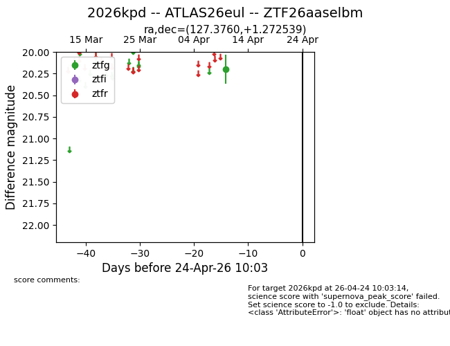
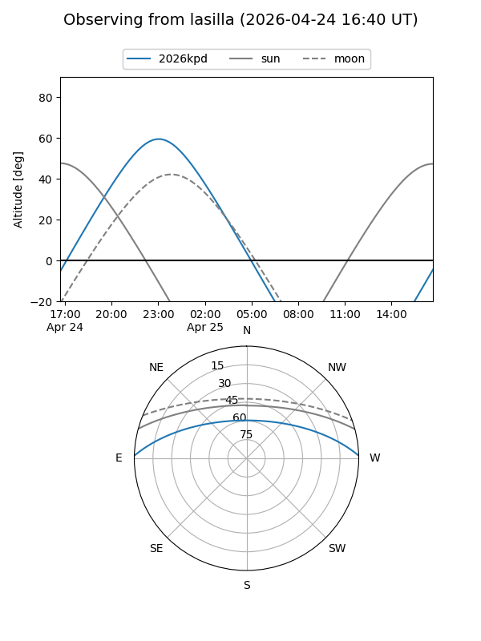
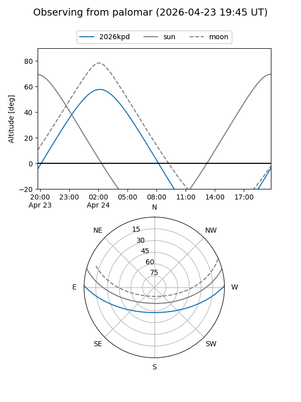

2026kpd
Target 2026kpd at 2026-04-24 10:04
Aliases and brokers:
FINK: link
Lasair: link
ALeRCE: link
TNS: link
YSE: link
alt names
ZTF26aaselbm (ztf,fink_ztf)
2026kpd (tns,yse)
ATLAS26eul (atlas)
Coordinates:
equatorial (ra, dec) = 127.3760,+1.27254
equatorial (HMS+DMS) = 08:29:30.25,+01:16:21.14
galactic (l, b) = (223.4815,+22.29290)
Flags:
Photometry:
last ztfg=20.20
1 ztfg detections
Lightcurve

Visibility


Additional plots